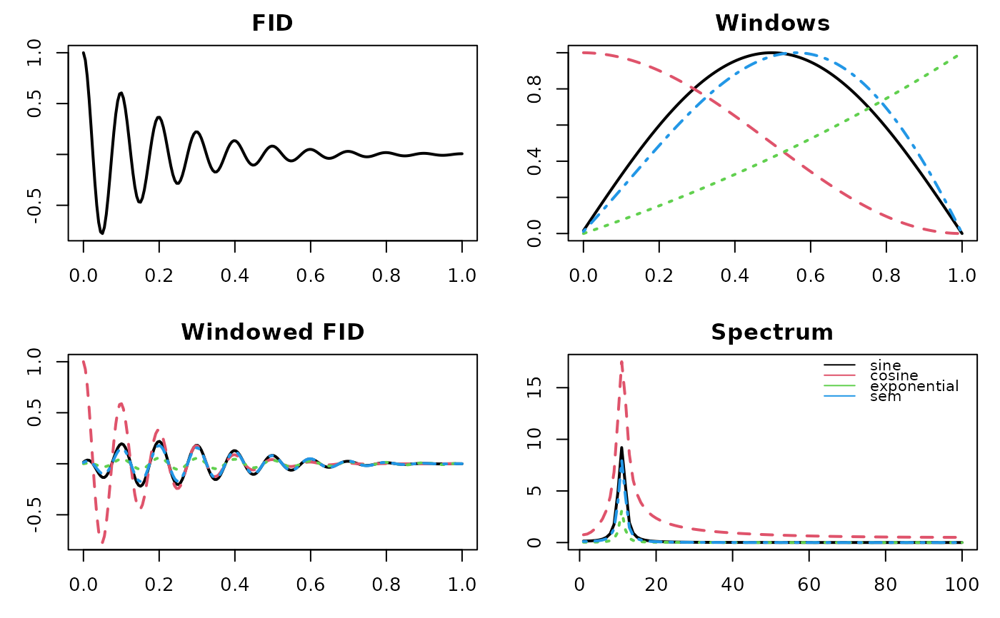

Generates apodisation (window) functions for FID processing.
The function applies one of several predefined window shapes,
selected via pars$fun.
Details
Supported apodisation functions and parameters:
"uniform"No apodisation (all weights = 1).
"exponential"Exponential decay window.
lbLine broadening parameter.
"cosine"Cosine window (no additional parameters).
"sine"Sine window (no additional parameters).
"sem"Sine-modulated exponential window.
lbExponential decay parameter.
"expGaus_resyG"Exponential-Gaussian hybrid window.
lbExponential decay parameter.
gbGaussian broadening parameter.
aq_tAcquisition time.
"gauss"Gaussian window (Bruker-style).
lbLine broadening parameter.
gbGaussian broadening factor.
paraList containing acquisition parameters (e.g.
a_SW_h,a_TD).
Examples
# Internal FID apidisation functions (illustrative only)
f_apod <- c("sine","cosine","exponential","sem")
# create toy fid
n <- 200; t <- seq(0,1,len=n)
fid <- exp(-5*t)*cos(20*pi*t)
# generate & apply apodisation windows
A <- sapply(f_apod, \(f) metabom8:::.fidApodisationFct(n, list(fun=f, lb=-0.2)))
Fp <- sweep(A, 1, fid, `*`)
# generate spectra
S <- apply(Fp, 2, \(x) Mod(fft(x))[1:(n/2)])
# graphhics
cols <- 1:ncol(A)
par(mfrow=c(2,2), mar=c(3,3,2,1))
plot(t, fid, type="l", lwd=2, main="FID")
matplot(t, A, type="l", lwd=2, col=cols, main="Windows")
matplot(t, Fp, type="l", lwd=2, col=cols, main="Windowed FID")
matplot(S, type="l", lwd=2, col=cols, main="Spectrum")
legend("topright", f_apod, col=cols, lty=1, bty="n", cex=.8)
